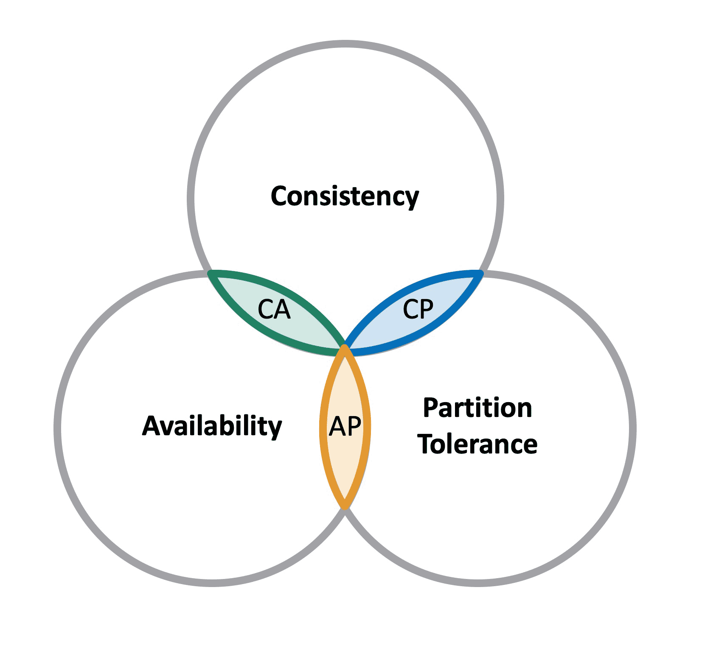
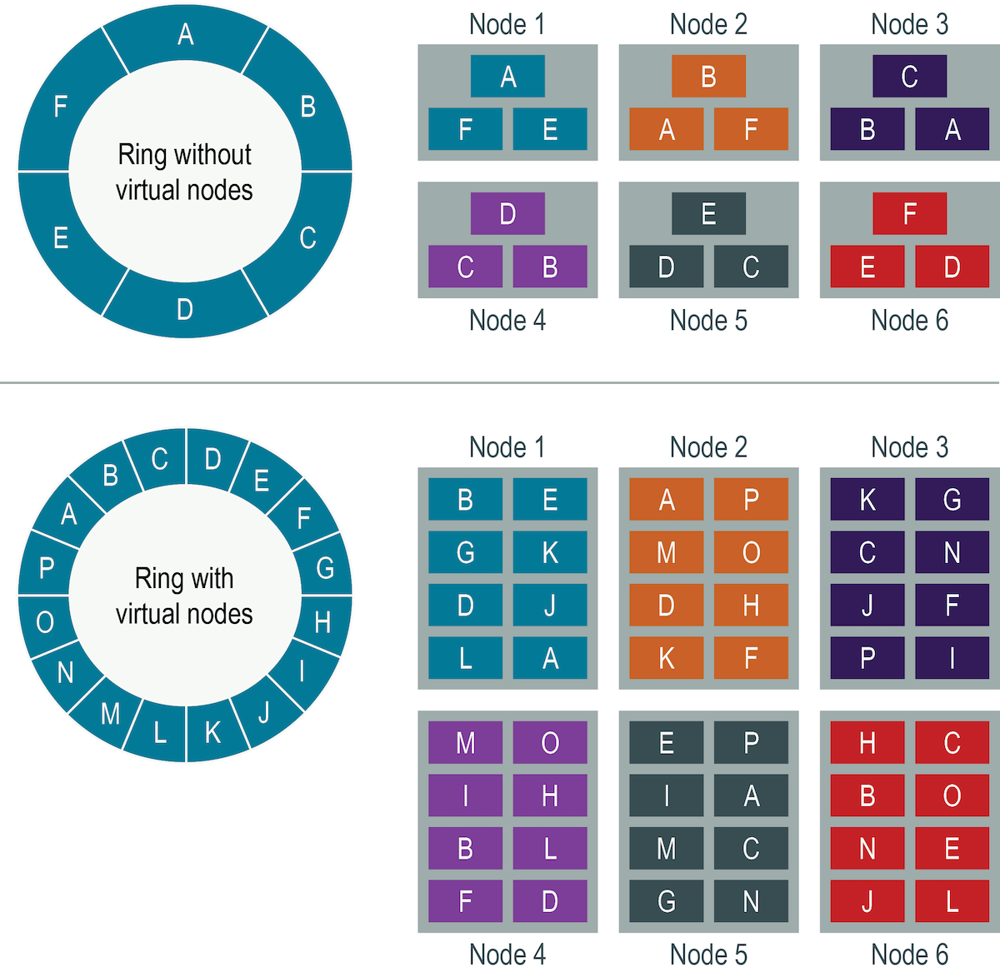
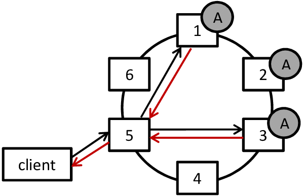
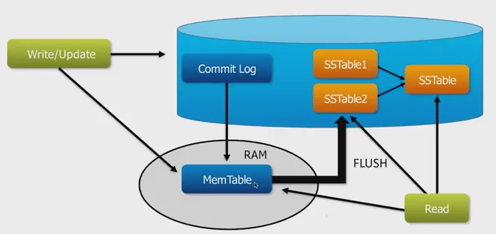

Introduction to Apache Cassandra
The basics and the lessons learnt
What is Cassandra?
- A NoSQL DB/Distributed key/value store
- Scalable
- Highly Available
But there are some catches...

The CAP Theorem
- Consistency
- Availability
- Partition Tolerance

However In Reality...
- Partition Tolerance is a given - network failures generally has to be tolerated
- A distributed system can only trade off between consistency and availability
- Though consistency and availability are not necessarily exclusive
Cassandra Availability
- Data Redundancy
- Masterless
Data Redundancy
- Consistent Hashing (on Partition Key)
- Virtual Nodes

Masterless
- Every node is coordinator node
- Queries being distributed among all nodes
- The node becomes the coordinator for the query
- Read/write success/failure depends on
- Replication Factor
- Consistency Level
- Failure detection and recover
- Gossip - A peer-to-peer communication protocol to discover and share location and state information about the other nodes in a Cassandra cluster
When Replication Factor = 2
Considering Consistency Level...
- Read = 3 and Write = 1?
- Read = 1 and Write = 3?
- Read = 2 and Write = 2? = Quorum

Cassandra Scalability
- Masterless and make use of coordinator node
- Immutable data structures
Immutable Data Structures
- SSTable - Sorted String Table
- Flush from the memtable to a SSTable periodically
- Tombstone
- To Mark on a column that is deleted
- To simplify, it's like special column value in SSTable
SSTable Example
CREATE TABLE IF NOT EXISTS test_key_space.price (
asset_name text,
price_date text,
close text,
PRIMARY_KEY(
asset_name, ## partition key
price_date, ## Column key
)
);
- To simplified, it's like a Map<\Parition Key, SortedMap<\Column Key, Column Value>
| Partition Key | Column Key/Value | Column Key2/Value | ... |
|---|---|---|---|
| 0700.HK | 20210102/close:700 | 20210103/close:710 | ... |
| 0700.HK | 20210103/close:711 | ||
| 0005.HK | 20210102/34.2 | 20210102/Tomestone |
Why Immutable?

Cassandra Schema Design Demo
Takeaway
- Availability
- Data Redundancy
- Masterless and corrdinator nodes
- Replication Factor
- Consistency Level
- Scalability
- Queries being distributed among nodes
- Immutable data structure - SSTable and Tomestone
- Schema design
- You must know your query pattern upfront
References